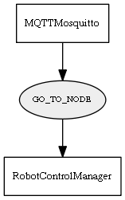

Global overview
All modules
All variables
All commands
Mission files
Pipelines
Variable: GO_TO_NODE
Variable info:
Variable name
Short description
Who publishes it?
Who subscribes to it?
GO_TO_NODE
Request the RobotController to start a reactive navigation to selected node.
MQTTMosquitto
RobotControlManager
Variable graph:

Detailed description:
Request the RobotController to start a reactive navigation to selected node.
Page generated by
Mooxygen 1.1.0
at Thu Jan 22 11:30:21 2015